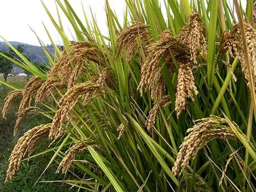

杂交水稻品种，由袁隆平等人育成。株高95-100厘米，株型较松散，茎粗抗倒伏，每蔸有效穗10个，每株总粒数130粒．千粒重29克。
其他水稻品种
Y两优1号
Y两优1号是湖南杂交水稻研究中心以自育低温敏不育系Y58S与扬稻6号（93-11）配组育成的两系超高产杂交稻。
超优千号
“超优千号”，是高品质的软米，属于第五期超级杂交稻。
威优64
威优64是湖南省黔阳农校用V20不育系与测64～7配组育成的早籼早熟杂交稻组合。1983年初桂林地区种子公司从湖南省水稻研究所引进。
Y两优900
Y两优900是创世纪种业有限公司以Y58S为母本，R900为父本选育的籼型两系杂交水稻品种。